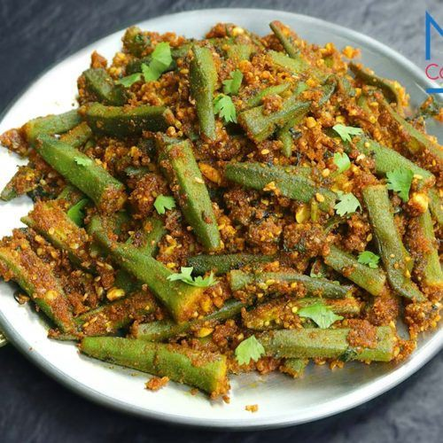

Bataka Nu Shak
Every Gujarati thali has one common sabzi in it. This recipe prepares traditional Gujarati batata nu rasa valu shaak, which can be paired up with masala puri or thepla for complete meal.
Price: 70₹

Bharela Ringhan
Bharwa baingan is a Indian style eggplant curry made by simmering small eggplants in a spicy onion masala.many Indians and enjoy them often with rice or roti.
Price: 60₹

Bhareli Bhindi
Bharwa bhindi is a delicious and flavorful gujarati recipe of sauteed okra stuffed with a flavorful mix of ground spices. This North Indian style stuffed bhindi is a vegan recipe.